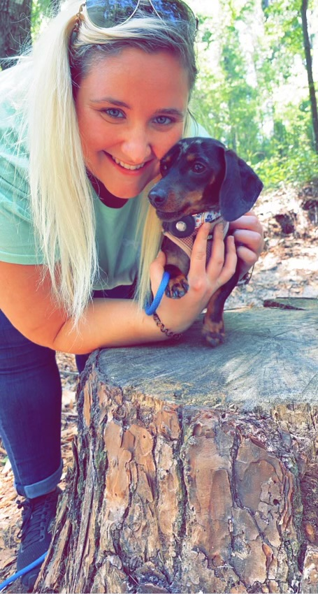

About Me

My name is Mackenzie Mulligan and I am a third-grade teacher. I have taught third-grade for three years. I have a miniature dachshund who is my entire world. I am pursuing my masters degree in curriculum and instruction with an emphasis on educational technology. I am excited to see where this degree leads me. In my three years of teaching, I have had to learn a new curriculum every year. That has made me aware of some things that I do like, and also that I do not like. With this in mind, I hope to become a curriculum developer after I complete my degree.